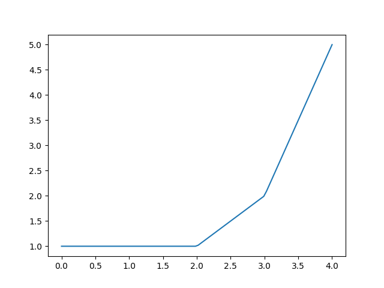
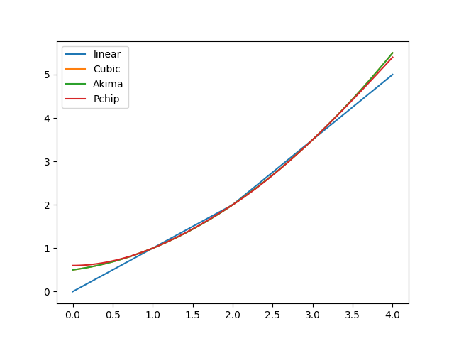
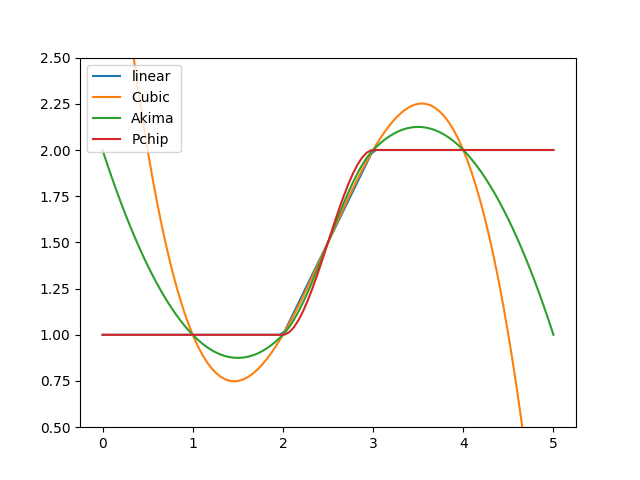

ppolytools¶
This module implements interpolation approaches based on piecewise polynomials required for some models implemented in the HydPy framework.
The relevant models perform the interpolation during simulation runs, which is why we
implement the related methods in the Cython extension module ppolyutils.
Module ppolytools implements the following members:
- class hydpy.auxs.ppolytools.Poly(x0: float, cs: tuple[float, ...])[source]¶
Bases:
NamedTupleParameter handler for a power series representation of a single polynomial function.
The following
Polyobject corresponds to the polynomial function \(f(x) = 2 + 3 \cdot (x - 1) + 4 \cdot (x - 1)^2\):>>> from hydpy import Poly >>> p = Poly(x0=1.0, cs=(2.0, 3.0, 4.0))
Proper application of the constant and all coefficients for \(x = 3\) results in 24:
>>> x = 3.0 >>> p.cs[0] + p.cs[1] * (x - p.x0) + p.cs[2] * (x - p.x0) ** 2 24.0
- assignrepr(prefix: str) str[source]¶
Return a string representation of the actual
Polyobject prefixed with the given string.>>> from hydpy import Poly >>> poly = Poly(x0=1.0/3.0, cs=(2.0, 3.0, 4.0/3.0)) >>> poly Poly(x0=0.333333, cs=(2.0, 3.0, 1.333333)) >>> print(poly.assignrepr(prefix="poly = ")) poly = Poly(x0=0.333333, cs=(2.0, 3.0, 1.333333))
- class hydpy.auxs.ppolytools.PPoly(*polynomials: Poly)[source]¶
Bases:
InterpAlgorithmPiecewise polynomial interpolator.
Class
PPolysupports univariate data interpolation via multiple polynomial functions. Typical use cases are linear or spline interpolation. The primary purpose ofPPolyis to allow for such interpolation within model equations (for example, to represent the relationship between water volume and water stage as in the modeldam_v001). Then, the user selectsPPolyas the interpolation algorithm employed by parameters derived fromSimpleInterpolator(e.g.WaterVolume2WaterLevel) orSeasonalInterpolator(e.g.WaterLevel2FloodDischarge). However, one can applyPPolyalso directly, as shown in the following examples.You can prepare a
PPolyobject by handing multiplePolyobjects to its constructor:>>> from hydpy import Poly, PPoly >>> ppoly = PPoly(Poly(x0=1.0, cs=(1.0,)), ... Poly(x0=2.0, cs=(1.0, 1.0)), ... Poly(x0=3.0, cs=(2.0, 3.0)))
Note that each power series constant (
x0) also serves as a breakpoint. Eachx0value defines the lower bound of the interval for which the polynomial is valid. The only exception affects the firstPolyobject. Here,x0also serves as the power series constant but not as a breakpoint. Hence,PPolyuses the first polynomial for extrapolation into the negative range (as it uses the last polynomial for extrapolating into the positive range). The following equation, which reflects the configuration of the prepared interpolator, should clarify this definition:\[\begin{split}f(x) = \begin{cases} 1 &|\ x < 2 \\ 1 + x - 2 &|\ 2 \leq x < 3 \\ 2 + 3 \cdot (x - 3) &|\ 3 \leq x \end{cases}\end{split}\]For applying ppoly, we need to set the input value before calling
calculate_values():>>> ppoly.inputs[0] = 2.5 >>> ppoly.calculate_values() >>> from hydpy import round_ >>> round_(ppoly.outputs[0]) 1.5
The same holds when calling method
calculate_derivatives()for calculating first order derivatives:>>> ppoly.calculate_derivatives(0) >>> round_(ppoly.output_derivatives[0]) 1.0
Use method
print_table()or methodplot()to inspect the results of ppoly within the relevant data range:>>> ppoly.print_table([0.5, 1.0, 1.5, 2.0, 2.5, 3.0, 3.5]) x y dy/dx 0.5 1.0 0.0 1.0 1.0 0.0 1.5 1.0 0.0 2.0 1.0 1.0 2.5 1.5 1.0 3.0 2.0 3.0 3.5 3.5 3.0
>>> figure = ppoly.plot(xmin=0.0, xmax=4.0) >>> from hydpy.core.testtools import save_autofig >>> save_autofig("PPoly_base_example.png", figure=figure)
PPolycollects all constants and coefficients and provides access to them via propertiesx0sandcsavailable:>>> from hydpy import print_matrix, print_vector >>> print_vector(ppoly.x0s) 1.0, 2.0, 3.0 >>> print_matrix(ppoly.cs) | 1.0, 0.0 | | 1.0, 1.0 | | 2.0, 3.0 |
Property
nmb_psreflects the total number of polynomials:>>> ppoly.nmb_ps 3
Property
nmb_csinforms about the number of relevant coefficients for each polynomial (the last non-negative coefficient is the last relevant one):>>> print_vector(ppoly.nmb_cs) 1, 2, 2
You are free to manipulate both the breakpoints and the coefficients:
>>> ppoly.x0s = 1.0, 2.0, 2.5 >>> ppoly.cs[1, 1] = 2.0
>>> ppoly.polynomials (Poly(x0=1.0, cs=(1.0,)), Poly(x0=2.0, cs=(1.0, 2.0)), Poly(x0=2.5, cs=(2.0, 3.0)))
>>> ppoly.print_table([0.5, 1.0, 1.5, 2.0, 2.5, 3.0, 3.5]) x y dy/dx 0.5 1.0 0.0 1.0 1.0 0.0 1.5 1.0 0.0 2.0 1.0 2.0 2.5 2.0 3.0 3.0 3.5 3.0 3.5 5.0 3.0
However, be aware that manipulating
nmb_ps,nmb_cs,x0s,nmb_cscan cause severe problems, including program crashes. Hence, you should always call theverify()method after manipulating these properties, which checks the integrity of the current configuration ofPPolyobjects:>>> ppoly.nmb_ps = 1 >>> ppoly.verify() Traceback (most recent call last): ... RuntimeError: While trying to verify parameter `ppoly` of element `?`, the following error occurred: The number of constants indicated by `nmb_ps` (1) does not agree with the actual number of constants held by vector `x0s` (3).
To change an existing
PPolyobject more safely, you can “call” it with differentPolyobjects, which overwrites all current information, as shown by the following example, defining only a single polynomial:>>> ppoly(Poly(x0=-1.0, cs=(0.0, 0.0, 1.0))) >>> ppoly.print_table([-3.0, -2.0, -1.0, 0.0, 1.0]) x y dy/dx -3.0 4.0 -4.0 -2.0 1.0 -2.0 -1.0 0.0 0.0 0.0 1.0 2.0 1.0 4.0 4.0
Calling
PPolyobjects without any arguments results in the following error:>>> ppoly() Traceback (most recent call last): ... ValueError: When calling an `PPoly` object, you need to define at least one polynomial function by passing at leas one `Poly` object.
- classmethod from_data(xs: VectorInputFloat, ys: VectorInputFloat, method: Literal['linear'] | type[interpolate.CubicHermiteSpline] = 'linear') PPoly[source]¶
Prepare a
PPolyobject based on x-y data.As explained in the main documentation on class
PPoly, you are free to define an arbitrary number of polynomials, each with arbitrary constants and coefficients. However, one usually prefers functionally similar polynomials that standardised algorithms can compute. Methodfrom_data()is a convenience function for following this route. So far, it supports linear interpolation and some spline techniques.We start our explanations with a small and smooth x-y data set:
>>> xs = [1.0, 2.0, 3.0] >>> ys = [1.0, 2.0, 3.5]
By default, method
from_data()prepares everything for a piecewise linear interpolation:>>> from hydpy import PPoly >>> ppoly = PPoly.from_data(xs=xs, ys=ys) >>> ppoly PPoly( Poly(x0=1.0, cs=(1.0, 1.0)), Poly(x0=2.0, cs=(2.0, 1.5)), ) >>> ppoly.print_table(xs=[1.9, 2.0, 2.1]) x y dy/dx 1.9 1.9 1.0 2.0 2.0 1.5 2.1 2.15 1.5 >>> figure = ppoly.plot(0.0, 4.0, label="linear")
Alternatively,
PPolycan use the followingscipyclasses for determining higher-order polynomials:>>> from scipy.interpolate import CubicSpline, Akima1DInterpolator, PchipInterpolator
For sufficiently smooth data, cubic spline interpolation is often a good choice, as it preserves much smoothness around breakpoints (helpful for reaching required accuracies when applying numerical integration algorithms):
>>> ppoly = PPoly.from_data(xs=xs, ys=ys, method=CubicSpline) >>> ppoly PPoly( Poly(x0=1.0, cs=(1.0, 0.75, 0.25)), Poly(x0=2.0, cs=(2.0, 1.25, 0.25)), ) >>> ppoly.print_table(xs=[1.9, 2.0, 2.1]) x y dy/dx 1.9 1.8775 1.2 2.0 2.0 1.25 2.1 2.1275 1.3 >>> figure = ppoly.plot(0.0, 4.0, label="Cubic")
For the given data, the Akima spline results in the same coefficients as the cubic spline:
>>> ppoly = PPoly.from_data(xs=xs, ys=ys, method=Akima1DInterpolator) >>> ppoly PPoly( Poly(x0=1.0, cs=(1.0, 0.75, 0.25)), Poly(x0=2.0, cs=(2.0, 1.25, 0.25)), ) >>> figure = ppoly.plot(0.0, 4.0, label="Akima")
The PCHIP (Piecewise Cubic Hermite Interpolating Polynomial) algorithm generally tends to less smooth interpolations:
>>> ppoly = PPoly.from_data(xs=xs, ys=ys, method=PchipInterpolator) >>> ppoly PPoly( Poly(x0=1.0, cs=(1.0, 0.75, 0.3, -0.05)), Poly(x0=2.0, cs=(2.0, 1.2, 0.35, -0.05)), ) >>> ppoly.print_table(xs=[1.9, 2.0, 2.1]) x y dy/dx 1.9 1.88155 1.1685 2.0 2.0 1.2 2.1 2.12345 1.2685 >>> figure = ppoly.plot(0.0, 4.0, label="Pchip")
The following figure compares the linear and all spline interpolation results. As to be expected, the most sensible differences show in the interpolation ranges:
>>> _ = figure.gca().legend() >>> from hydpy.core.testtools import save_autofig >>> save_autofig("PPoly_data_smooth.png")
Next, we apply all four interpolation approaches on a non-smooth data set. Cubic interpolation is again the smoothest one but tends to overshoot, which can be problematic when violating physical constraints. Besides the linear approach, only the PCHIP interpolation always preserves monotonicity in the original data. The Akima interpolation appears as a good compromise between these two approaches:
>>> for method, label in (("linear", "linear"), ... (CubicSpline, "Cubic"), ... (Akima1DInterpolator, "Akima"), ... (PchipInterpolator, "Pchip")): ... figure = PPoly.from_data( ... xs=[1.0, 2.0, 3.0, 4.0], ys=[1.0, 1.0, 2.0, 2.0], method=method ... ).plot(0.0, 5.0, label=label) >>> _ = figure.gca().legend() >>> _ = figure.gca().set_ylim((0.5, 2.5)) >>> save_autofig("PPoly_data_not_smooth.png")
Passing data sets with one or two x-y pairs works fine:
>>> PPoly.from_data(xs=[0.0], ys=[1.0]) PPoly( Poly(x0=0.0, cs=(1.0,)), )
>>> PPoly.from_data(xs=[0.0, 1.0], ys=[2.0, 5.0]) PPoly( Poly(x0=0.0, cs=(2.0, 3.0)), )
Empty data sets or data sets of different lengths result in the following error messages:
>>> PPoly.from_data(xs=[], ys=[]) Traceback (most recent call last): ... ValueError: While trying to derive polynomials from the vectors `x` ([]) and `y` ([]), the following error occurred: Vectors `x` and `y` must not be empty.
>>> PPoly.from_data(xs=[0.0, 1.0], ys=[1.0, 2.0, 3.0]) Traceback (most recent call last): ... ValueError: While trying to derive polynomials from the vectors `x` ([0.0 and 1.0]) and `y` ([1.0, 2.0, and 3.0]), the following error occurred: The lenghts of vectors `x` (2) and `y` (3) must be identical.
- nmb_inputs: BaseProperty[Never, int]¶
The number of input values.
- nmb_outputs: BaseProperty[Never, int]¶
The lastly calculated output values.
- outputs: BaseProperty[Never, ndarray[tuple[Any, ...], dtype[float64]]]¶
The lastly calculated output values.
- output_derivatives: BaseProperty[Never, ndarray[tuple[Any, ...], dtype[float64]]]¶
The lastly calculated first-order derivatives.
- nmb_ps¶
The number of polynomials.
nmb_psis “protected” (implemented byProtectedProperty) for the sake of preventing segmentation faults when trying to access the related data from the underlying Cython extension class before allocation:>>> from hydpy import PPoly >>> ppoly = PPoly() >>> ppoly.nmb_ps = 1 >>> ppoly.nmb_ps 1 >>> del ppoly.nmb_ps >>> ppoly.nmb_ps Traceback (most recent call last): ... hydpy.core.exceptiontools.AttributeNotReady: Attribute `nmb_ps` of object `ppoly` has not been prepared so far.
- nmb_cs¶
The number of relevant coefficients for each polynomial.
nmb_csis “protected” (implemented byProtectedProperty) for the sake of preventing segmentation faults when trying to access the related data from the underlying Cython extension class before allocation:>>> from hydpy import PPoly, print_vector >>> ppoly = PPoly() >>> ppoly.nmb_cs = 1, 2 >>> print_vector(ppoly.nmb_cs) 1, 2 >>> del ppoly.nmb_cs >>> ppoly.nmb_cs Traceback (most recent call last): ... hydpy.core.exceptiontools.AttributeNotReady: Attribute `nmb_cs` of object `ppoly` has not been prepared so far.
- x0s¶
The power series constants of all polynomials.
x0sis “protected” (implemented byProtectedProperty) for the sake of preventing segmentation faults when trying to access the related data from the underlying Cython extension class before allocation:>>> from hydpy import PPoly, print_vector >>> ppoly = PPoly() >>> ppoly.x0s = 1.0, 2.0 >>> print_vector(ppoly.x0s) 1.0, 2.0 >>> del ppoly.x0s >>> ppoly.x0s Traceback (most recent call last): ... hydpy.core.exceptiontools.AttributeNotReady: Attribute `x0s` of object `ppoly` has not been prepared so far.
- cs¶
The power series coefficients of all polynomials.
csis “protected” (implemented byProtectedProperty) for the sake of preventing segmentation faults when trying to access the related data from the underlying Cython extension class before allocation:>>> from hydpy import PPoly, print_matrix >>> ppoly = PPoly() >>> ppoly.cs = [[1.0, 2.0], [3.0, 4.0]] >>> print_matrix(ppoly.cs) | 1.0, 2.0 | | 3.0, 4.0 | >>> del ppoly.cs >>> ppoly.cs Traceback (most recent call last): ... hydpy.core.exceptiontools.AttributeNotReady: Attribute `cs` of object `ppoly` has not been prepared so far.
- calculate_values() None[source]¶
Calculate the output value based on the input values defined previously.
For more information, see the documentation on class
PPoly.
- calculate_derivatives(idx: int = 0, /) None[source]¶
Calculate the derivative of the output value with respect to the input value.
For more information, see the documentation on class
PPoly.
- property polynomials: tuple[Poly, ...]¶
The configuration of the current
PPolyobject, represented by a tuple ofPolyobjects.>>> from hydpy import Poly, PPoly >>> ppoly = PPoly(Poly(x0=1.0, cs=(1.0,)), Poly(x0=2.0, cs=(1.0, 1.0))) >>> ppoly.polynomials (Poly(x0=1.0, cs=(1.0,)), Poly(x0=2.0, cs=(1.0, 1.0)))
- sort() None[source]¶
Sort the currently handled polynomials.
The power series constants held by array
x0salso serve as breakpoints, defining the lower bounds of the intervals for which the available polynomials are valid. The algorithm underlyingPPolyexpects them in sorted order.In the following example, we hand over two wrongly-ordered
Polyobjects:>>> from hydpy import Poly, PPoly, print_matrix, print_vector >>> ppoly = PPoly(Poly(x0=2.0, cs=(1.0, 1.0)), Poly(x0=1.0, cs=(1.0,))) >>> ppoly.polynomials (Poly(x0=2.0, cs=(1.0, 1.0)), Poly(x0=1.0, cs=(1.0,))) >>> print_vector(ppoly.x0s) 2.0, 1.0 >>> print_vector(ppoly.nmb_cs) 2, 1 >>> print_matrix(ppoly.cs) | 1.0, 1.0 | | 1.0, 0.0 |
Method
sort()sortsx0sand the related arraysnmb_csandcs:>>> ppoly.sort() >>> ppoly.polynomials (Poly(x0=1.0, cs=(1.0,)), Poly(x0=2.0, cs=(1.0, 1.0))) >>> print_vector(ppoly.x0s) 1.0, 2.0 >>> print_vector(ppoly.nmb_cs) 1, 2 >>> print_matrix(ppoly.cs) | 1.0, 0.0 | | 1.0, 1.0 |
- verify() None[source]¶
Raise a
RuntimeErrorif the currentPPolyobject shows inconsistencies.Note that
PPolynever callsverify()automatically. Hence, we strongly advise applying it manually before using a newPPolyconfiguration the first time.So far, method
verify()reports the following problems:>>> from hydpy import PPoly >>> ppoly = PPoly(Poly(x0=2.0, cs=(1.0, 1.0)), Poly(x0=1.0, cs=(1.0,))) >>> ppoly.verify() Traceback (most recent call last): ... RuntimeError: While trying to verify parameter `ppoly` of element `?`, the following error occurred: The constants held in vector `x0s` are not strictly increasing, which is necessary as they also serve as breakpoints for selecting the relevant polynomials.
>>> ppoly.sort() >>> ppoly.verify()
>>> ppoly.nmb_cs[1] = 3 >>> ppoly.verify() Traceback (most recent call last): ... RuntimeError: While trying to verify parameter `ppoly` of element `?`, the following error occurred: The highest number of coefficients indicated by `nmb_cs` (3) is larger than the possible number of coefficients storable in the coefficient matrix `cs` (2).
>>> ppoly.cs = ppoly.cs[:1, :] >>> ppoly.verify() Traceback (most recent call last): ... RuntimeError: While trying to verify parameter `ppoly` of element `?`, the following error occurred: The number of polynomials indicated by `nmb_ps` (2) does not agree with the actual number of coefficient arrays held by matrix `cs` (1).
>>> ppoly.x0s = ppoly.x0s[:1] >>> ppoly.verify() Traceback (most recent call last): ... RuntimeError: While trying to verify parameter `ppoly` of element `?`, the following error occurred: The number of constants indicated by `nmb_ps` (2) does not agree with the actual number of constants held by vector `x0s` (1).
- assignrepr(prefix: str, indent: int = 0) str[source]¶
Return a string representation of the actual
PPolyobject prefixed with the given string.>>> from hydpy import Poly, PPoly >>> ppoly = PPoly(Poly(x0=1.0, cs=(1.0,)), Poly(x0=2.0, cs=(1.0, 1.0))) >>> ppoly PPoly( Poly(x0=1.0, cs=(1.0,)), Poly(x0=2.0, cs=(1.0, 1.0)), ) >>> print(ppoly.assignrepr(prefix=" ppoly = ", indent=4)) ppoly = PPoly( Poly(x0=1.0, cs=(1.0,)), Poly(x0=2.0, cs=(1.0, 1.0)), )